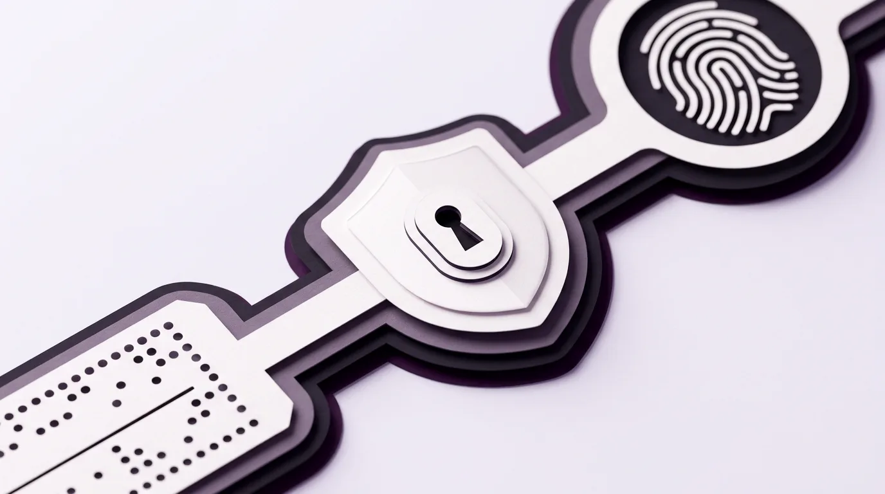

Secara sederhana, password adalah deretan kata atau karakter rahasia yang dipakai untuk membuktikan bahwa kamulah pemilik sah sebuah akun sebelum komputer mengizinkanmu masuk. Meskipun teknologi pengunci komputer sudah berkembang jauh sejak password komputer pertama kali diciptakan oleh Fernando Corbató di kampus MIT pada tahun 1961, sebagian besar kasus pembobolan akun dan perangkat digital hari ini justru terjadi bukan karena peretas memakai alat canggih seperti di film, melainkan karena pemiliknya masih membiarkan kata sandi bawaan pabrik, memakai satu sandi yang sama di puluhan situs, serta belum menyalakan kunci pengaman lapis kedua (verifikasi dua langkah atau 2FA).
Memasuki awal November 2026 ini, warganet di berbagai negara termasuk kawasan Asia Tenggara dihebohkan oleh video deretan papan iklan elektronik (billboard LED) di tepi jalan raya yang mendadak menampilkan tayangan di luar kendali pemiliknya secara serentak. Banyak orang awam mengira pelaku di balik kejadian tersebut pasti seorang jenius matematika yang membongkar kode tingkat tinggi selama berminggu-minggu.
Kenyataan di balik layar justru membuat para praktisi keamanan siber tepuk jidat. Banyak layar iklan modern dikendalikan dari jarak jauh menggunakan halaman website admin yang terhubung ke internet, dan pengelolanya lupa mengganti kata sandi bawaan pabrik sejak alat itu pertama kali dipasang! Mengapa sesudah lebih dari enam puluh tahun mengenal komputer, manusia masih saja begitu mudah kecolongan urusan kata sandi? Untuk menjawabnya, kita akan membedah bagaimana serangan tebak sandi bekerja di internet, menengok kisah sejarah lahirnya password pertama pada tahun 1961 beserta evolusi teknisnya sampai sekarang, lalu mengupas lima kesalahan fatal yang wajib kamu hindari hari ini.
Ketika Papan Iklan Raksasa Jebol Hanya karena Pengelolanya Malas Mengganti Sandi Pabrik
Setiap kali kamu membeli perangkat pintar yang bisa tersambung ke internet, entah itu kotak pemancar Wi-Fi (router) untuk di ruang tamu, kamera pengawas (CCTV), layar iklan digital, maupun sistem pengelola halaman website, pabrik pembuatnya selalu menyertakan satu kunci masuk awal. Kunci awal yang sama persis untuk jutaan barang produksi pabrik itulah yang disebut sebagai default password (kata sandi bawaan pabrik).
Tujuan pabrik memberikan kata sandi sederhana seperti nama pengguna admin dengan sandi
admin, 123456, atau password sebenarnya hanya untuk memudahkan teknisi
saat pertama kali menyalakan alat tersebut. Di halaman pertama buku petunjuk selalu tertulis peringatan tebal
agar pembeli segera menggantinya di hari pertama. Sayangnya, karena merasa alatnya sudah langsung menyala dan
berfungsi normal, mayoritas orang langsung membuang buku petunjuknya dan membiarkan kunci bawaan pabrik itu
menempel selama bertahun-tahun.
Bagaimana Serangan Tebak Sandi Otomatis Bekerja Mencari Pintu yang Tidak Dikunci
Banyak pemilik usaha atau pengguna rumahan berpikir, "Ah, halaman admin website atau modem rumah saya kan kecil dan tidak terkenal, mana mungkin ada peretas yang iseng mampir?" Cara berpikir ini keliru besar karena di internet hari ini, yang berkeliling mencari pintu terbuka bukanlah manusia yang mengetik satu per satu, melainkan program robot pencari otomatis (bot).
Di dunia keamanan komputer, ada metode serangan paling dasar yang wajib dipahami setiap pemula bernama
Brute Force (serangan tebak paksa). Bayangkan ada seorang pencuri yang memiliki koper berisi
sepuluh ribu anak kunci berbeda. Kalau pencuri itu adalah manusia biasa, tangannya akan pegal mencoba
memasukkan anak kunci itu satu demi satu ke lubang gembok rumahmu. Namun di dunia digital, peretas menyuruh
sebuah program komputer untuk mengetik ribuan kombinasi kata sandi pasaran (seperti admin123,
qwerty, indonesia, hingga tanggal lahir) ke jutaan alamat internet secara serentak
dalam hitungan detik.
Bahaya Membiarkan Kata Sandi Bawaan pada Modem Rumah dan Halaman Admin Website
Begitu robot pemindai otomatis menemukan satu perangkat yang alamatnya terbuka di internet dan masih memakai kata sandi bawaan pabrik, pintu itu langsung terbuka lebar dalam waktu kurang dari satu kedipan mata. Tidak ada pertahanan sekuat apa pun yang berguna jika pemilik rumah sendiri yang menggantungkan kunci cadangan di gagang pintu depan.
Prinsip Dasar Gembok Digital: Peretas di internet jarang mengincar namamu secara pribadi sejak awal. Mereka hanya menyebarkan jaring otomatis ke jutaan alamat sekaligus, dan siapa pun yang membiarkan password bawaan pabrik atau sandi pasaran akan otomatis tersangkut di dalam jaring tersebut.
Sejarah Awal Password Komputer Dibuat pada Tahun 1961 dan Peretasan Pertamanya
Mengapa manusia memilih metode mengetik kata rahasia untuk mengamankan komputer? Apakah sejak komputer pertama kali diciptakan sudah ada kolom password di layarnya? Jawabannya adalah tidak. Pada dekade 1940-an dan 1950-an, komputer adalah mesin hitung raksasa sebesar ruang kelas yang tidak membutuhkan kata sandi sama sekali.
Saat itu, kalau seorang ilmuwan ingin menjalankan program di komputer, ia harus mengantre di depan pintu ruangan yang dijaga petugas keamanan fisik, membawa tumpukan kartu kertas berlubang (punch cards), lalu menggunakan seluruh mesin raksasa itu sendirian selama satu jam penuh. Setelah selesai, ia mengambil semua kartunya dan keluar ruangan. Karena komputer hanya dipakai satu orang pada satu waktu, tidak ada berkas rahasia yang tertinggal di dalam mesin.
Kisah Fernando Corbató di Kampus MIT Saat Satu Komputer Raksasa Dipakai Ramai-ramai
Keadaan berubah drastis pada tahun 1961 di kampus Massachusetts Institute of Technology (MIT), Amerika Serikat. Seorang profesor ilmu komputer visioner bernama Fernando "Corby" Corbató merasa cara kerja antre satu per satu di depan komputer raksasa itu sangat membuang-buang waktu. Ia pun merancang sebuah sistem terobosan bernama CTSS (Compatible Time-Sharing System).
Lewat sistem CTSS, satu komputer induk raksasa (IBM 7090) dihubungkan dengan banyak mesin ketik terminal sekaligus. Untuk pertama kalinya dalam sejarah, belasan dosen dan mahasiswa bisa mengetik perintah dan menyimpan berkas pekerjaan mereka sendiri-sendiri di dalam satu ruang penyimpanan pusat (hard disk) yang sama secara bersamaan! Namun, begitu banyak orang berbagi satu lemari penyimpanan yang sama, muncul satu masalah baru: bagaimana caranya agar mahasiswa yang sedang iseng tidak bisa membuka atau menghapus berkas penelitian milik dosennya?
Untuk menyelesaikan masalah privasi sederhana itu, Fernando Corbató meminjam konsep kata sandi penjaga malam militer kuno (watchword) dan memasangnya ke dalam komputer CTSS pada tahun 1961. Setiap pengguna diberi satu loker folder pribadi, dan sebelum bisa membuka loker tersebut, mereka wajib mengetik sepotong kata rahasia yang hanya diketahui oleh pemiliknya. Di laboratorium MIT tahun 1961 itulah password komputer pertama dalam sejarah umat manusia resmi dilahirkan.
Akal-akalan Mahasiswa Bernama Allan Scherr dan Kejadian Konyol Bocornya Sandi Kampus
Hal paling menghibur dari sejarah penemuan password adalah fakta bahwa umur keamanannya hanya bertahan satu tahun sebelum berhasil diakali manusia! Pada tahun 1962, seorang mahasiswa doktoral MIT bernama Allan Scherr sedang mengerjakan simulasi komputer untuk tugas akhirnya. Masalahnya, kampus membatasi jatah pakai komputer setiap mahasiswa hanya empat jam per minggu, dan jatah waktu milik Scherr sudah habis.
Karena butuh jam tambahan, Scherr memutar otak. Ia sadar bahwa sistem komputer CTSS menyimpan seluruh daftar
kata sandi milik dosen dan mahasiswa di dalam satu berkas induk bernama UFD (User File Directory)
tanpa diacak sama sekali. Scherr lalu memasukkan perintah cetak di malam hari, dan mesin komputer itu dengan
patuh mencetak kartu berisi seluruh daftar password warga kampus MIT! Dengan meminjam akun milik para
profesor yang jarang memakai jatah jam komputernya, Scherr berhasil menyelesaikan penelitiannya (dan kelak ia
mengaku secara jujur kepada Corbató hingga kisahnya tercatat sebagai peretasan password komputer
pertama di dunia).
Tidak berhenti di situ, menurut catatan sejarah keamanan komputer yang ditulis oleh Robert Morris dan Ken Thompson pada tahun 1979, pada tahun 1966 terjadi lagi insiden konyol di sistem CTSS MIT yang menjadi pelajaran abadi bagi para pembuat perangkat lunak. Suatu hari, dua pengelola sistem kebetulan menggunakan program penyunting teks pada waktu yang bersamaan: satu orang sedang menyunting berkas pesan sapaan harian (Message of the Day), sedangkan satu orang lagi sedang menyunting berkas daftar password utama. Akibat kelemahan pengelolaan berkas sementara di program penyunting tersebut, komputer induk tidak sengaja menukar isi kedua berkas itu. Walhasil, setiap mahasiswa dan dosen yang menyalakan layar komputer pada hari itu langsung disambut dengan daftar lengkap kata sandi rahasia milik seluruh penghuni kampus!
Evolusi Implementasi Password dari Teks Telanjang hingga Menjadi Grendel Ganda dan Passkey
Dua kejadian di kampus MIT pada tahun 1962 dan 1966 itu menyadarkan para ilmuwan komputer akan satu hukum mutlak: menyimpan kata sandi pengguna secara apa adanya (plain text) di dalam komputer server adalah bom waktu yang sangat berbahaya. Jika komputer pusat berhasil diintip orang dalam atau dibobol peretas, maka tamatlah riwayat seluruh pengguna.
Sejak saat itu, cara kerja dan implementasi password di balik layar terus disempurnakan selama puluhan tahun melalui empat lompatan besar.

Mesin Penggiling Kata Sandi Bernama Hashing dan Penyesalan Pembuat Aturan Simbol Rumit
Lompatan pertama terjadi pada dekade 1970-an ketika ilmuwan Robert Morris Sr. dan Ken Thompson di laboratorium Bell Labs sedang membangun sistem operasi UNIX. Mereka menciptakan metode penyimpanan sandi menggunakan rumus matematika satu arah yang disebut Cryptographic Hashing beserta tambahan kode acak bernama Salt.
Bagaimana cara kerja hashing jika dijelaskan dengan bahasa sederhana? Bayangkan sebuah mesin blender jus buah satu arah:
- Ketika kamu mendaftar akun di sebuah website modern dan mengetik kata sandi
KucingBelang99, komputer pusat tidak pernah menulis kataKucingBelang99ke dalam buku catatannya. - Komputer memasukkan kata sandimu ke dalam "mesin penggiling" (hash) ditambah sejumput "garam
acak" (salt), sehingga berubah menjadi deretan huruf acak seperti
7f8a9d2c4b1e.... Hanya hasil gilingan inilah yang disimpan di server! - Karena mesin blender tidak bisa mengubah jus kembali menjadi buah utuh, bahkan pemilik website
atau peretas yang mencuri pangkalan data sekalipun tidak bisa langsung membaca kata sandi aslimu. Saat besok
kamu login dan mengetik
KucingBelang99, sistem cukup memblender ulang ketikanmu lalu mencocokkan apakah warna jusnya sama persis dengan yang tersimpan di buku catatan.
Lompatan menarik berikutnya terjadi antara tahun 2003 hingga 2017 yang berkaitan dengan aturan pembuatan password. Pernahkah kamu merasa kesal saat mendaftar di sebuah situs web lalu dipaksa memasukkan kombinasi huruf besar, huruf kecil, angka, tanda seru, dan dipaksa mengganti sandi setiap 90 hari sekali? Aturan itu berasal dari pedoman sepanjang delapan halaman yang ditulis pada tahun 2003 oleh seorang manajer lembaga standar Amerika Serikat (NIST) bernama Bill Burr.
Empat belas tahun kemudian, pada tahun 2017, Bill Burr secara terbuka menyatakan
penyesalannya kepada publik melalui surat kabar Wall Street Journal. Mengapa? Karena penelitian
membuktikan bahwa ketika manusia dipaksa membuat sandi penuh simbol rumit dan harus diganti tiap tiga bulan,
otak manusia justru mengambil jalan pintas yang sangat mudah ditebak komputer! Orang-orang hanya mengubah
huruf a menjadi @, huruf o menjadi 0 (seperti
P@ssw0rd1!), lalu tiga bulan kemudian hanya mengubah angkanya menjadi P@ssw0rd2!.
Sejak tahun 2017 hingga sekarang, standar keamanan modern resmi membuang aturan pemaksaan simbol rumit
tersebut dan beralih ke kalimat panjang (passphrase), verifikasi dua langkah (2FA),
serta kunci biometrik (Passkey).
Bagi kamu yang sering mendengar istilah Passkey akhir-akhir ini saat masuk ke akun Google, WhatsApp, atau toko belanja, cara kerjanya sebenarnya sangat sederhana. Jika password biasa mengharuskanmu menghafal kata rahasia dan mengirimkannya lewat internet ke komputer website, Passkey bekerja seperti sepasang gembok dan kunci kembar. Separuh kuncinya dititipkan ke website, sedangkan separuh kunci rahasianya dikunci rapat di dalam cip keamanan ponselmu dan hanya mau berputar jika mendeteksi sidik jari atau wajah aslimu. Karena tidak ada satu huruf pun kata sandi yang diketik atau dikirim lewat jaringan internet, penipu yang membuat situs palsu (phishing) tidak lagi punya kata sandi yang bisa dicuri darimu!
Tabel Perkembangan Cara Kerja Pengaman Akun dari Masa Awal Komputer sampai Hari Ini
Tabel berikut merangkum bagaimana cara kerja pengaman akun kita berkembang dari tahun 1961 hingga standar keamanan web tahun 2026:
| Era & Metode | Cara Kerja di Balik Layar | Kelemahan & Tingkat Keamanan |
|---|---|---|
| 1961: Plain Text (Teks Telanjang) | Kata sandi disimpan utuh apa adanya di dalam berkas komputer induk (seperti di sistem CTSS MIT). | Sangat Berbahaya: Siapa pun yang berhasil mengintip berkas server langsung mengetahui seluruh kata sandi pengguna. |
| 1970-an: Hashing & Salting | Kata sandi digiling menjadi kode acak satu arah ditambah bumbu karakter unik (salt) sehingga wujud aslinya tidak pernah disimpan di server. | Standar Wajib Server: Melindungi sandi saat database bocor, namun tetap
bisa ditebak jika pengguna memakai sandi pendek seperti 123456. |
| 2003: Aturan Simbol Rumit | Mewajibkan huruf besar, angka, simbol (P@ssw0rd!), dan ganti sandi tiap 90 hari. |
Kurang Efektif bagi Manusia: Sulit diingat manusia sehingga memicu kebiasaan menulis sandi di kertas atau memakai pola yang mudah ditebak robot. |
| 2010-an: 2FA / MFA (Grendel Ganda) | Selain mengetik kata sandi, pengguna wajib memasukkan kode angka sementara (OTP/Authenticator) dari ponsel pribadinya. | Sangat Kuat: Meski peretas berhasil mencuri kata sandimu, mereka tetap tertahan di luar pintu karena tidak memegang ponselmu. |
| Era Sekarang: Passphrase & Passkey | Menggunakan kalimat panjang yang mudah diingat atau kunci kriptografi biometrik (sidik jari/wajah) yang tersimpan di perangkat. | Paling Aman & Nyaman: Kebal terhadap serangan tebak sandi otomatis dan tidak bisa dicuri lewat situs jebakan (phishing). |
Lima Kesalahan Password yang Paling Sering Dilakukan dan Cara Memperbaikinya
Meskipun teknologi pengamanan di sisi pembuat website sudah sedemikian maju, rantai keamanan selalu putus di titik yang paling lemah, yaitu kebiasaan kita sehari-hari saat membuat dan menyimpan kata sandi. Berikut adalah lima kesalahan paling sering yang membuat akun mahasiswa, pekerja, hingga pemilik usaha masih mudah dibobol.
Efek Domino Satu Sandi untuk Semua Akun dan Cara Kerja Grendel Kedua 2FA
Lima kebiasaan berisiko tinggi yang wajib segera kamu hentikan mulai hari ini adalah:
- Memakai Satu Password yang Sama untuk Semua Akun (Password Reuse): Ini adalah kesalahan nomor satu paling mematikan di dunia internet! Bayangkan kamu memakai kata sandi yang sama persis untuk mendaftar situs permainan kecil, forum diskusi, toko belanja, sekaligus untuk email utama dan perbankanmu. Ketika situs permainan kecil yang keamanannya lemah itu bocor, peretas mengambil pasangan alamat email dan kata sandimu, lalu mencobanya secara otomatis ke akun Google, Instagram, dan bank milikmu (teknik ini disebut Credential Stuffing). Satu kunci gudang yang jatuh di jalan akhirnya bisa dipakai maling untuk membuka brankas kamar tidurmu!
- Tidak Mengganti Password Bawaan Pabrik (Default Password): Membiarkan modem Wi-Fi rumah,
kamera pengawas, atau halaman admin website tetap memakai sandi bawaan
adminadalah undangan terbuka bagi robot pemindai otomatis, persis seperti yang menimpa kasus papan iklan jalan raya maupun kerentanan server seperti yang pernah kita bahas pada artikel celah keamanan kritis server web dan pentingnya memperbarui sistem. - Menggunakan Nama Sendiri, Tanggal Lahir, atau Urutan Papan Ketik: Kata sandi seperti
budi1998,qwerty123, ataubismillahberada di halaman pertama kamus tebakan setiap program peretas (Dictionary Attack). Komputer modern mampu menebak kombinasi pendek semacam itu dalam waktu kurang dari satu detik. - Malas Menyalakan Verifikasi Dua Langkah (2FA / Two-Factor Authentication): Banyak orang menganggap permintaan kode angka tambahan saat login itu merepotkan. Padahal, sebagaimana sudah kita kupas dalam pentingnya gesekan yang disengaja (intentional friction) pada desain keamanan, jeda lima detik untuk memasukkan kode dari aplikasi Authenticator adalah grendel besi kedua yang menyelamatkan akunmu ketika kata sandi utamamu tidak sengaja bocor.
- Mengetik Password di Tautan Jebakan (Phishing): Sebagus apa pun gembok rumahmu, gembok itu tidak berguna jika kamu sendiri yang menyerahkan kuncinya kepada penipu yang menyamar. Selalu periksa huruf demi huruf alamat website di bagian atas layar sebelum mengetik kata sandi, terutama jika kamu baru saja mengklik tautan dari pesan singkat yang mengabarkan hadiah mendadak atau ancaman pemblokiran akun.
Mengapa Kalimat Panjang yang Mudah Diingat Jauh Lebih Kuat daripada Simbol Rumit yang Pendek
Lalu bagaimana cara membuat kata sandi yang sangat sulit dijebol komputer, tetapi tidak membuat otak kita mengalami kelelahan berpikir saat harus mengingatnya? Rahasianya adalah beralih dari Password (satu kata pendek penuh simbol) menjadi Passphrase (rangkaian tiga atau empat kata acak yang membentuk kalimat panjang).
Dalam matematika komputer, panjang karakter jauh lebih menentukan kekuatan sandi dibandingkan kerumitan simbol:
- Kata sandi gaya lama yang pendek seperti
Tr0ub4dor&3(11 karakter) sangat menyiksa ingatan manusia karena kita selalu lupa apakah hurufo-nya memakai angka nol atau huruf biasa, namun bagi mesin penebak modern, sandi 11 karakter ini bisa dipecahkan hanya dalam hitungan jam atau hari. - Sebaliknya, kalimat panjang yang dirangkai dari empat kata sederhana seperti
KucingUnguMinumKopiPanas26!(27 karakter) sangat mudah dibayangkan seperti gambar cerita di kepala manusia, tetapi karena panjangnya mencapai 27 huruf, komputer peretas membutuhkan waktu jutaan tahun untuk menebak urutannya secara paksa!
Mengamankan Pintu Digitalmu dalam Lima Belas Menit ke Depan
Dari kisah profesor Fernando Corbató dan mahasiswanya di ruang komputer MIT pada tahun 1961 hingga insiden diretasnya papan iklan digital di pinggir jalan raya pada tahun 2026, sejarah selalu mengajarkan satu pesan yang sama: keamanan digital bukanlah barang sekali pasang lalu dilupakan selamanya. Teknologi pengunci pintu terus bertambah pintar mulai dari kartu berlubang, penggiling kode hashing, grendel ganda 2FA, hingga Passkey sidik jari, tetapi kuncinya tetap berada di tangan kedisiplinan pemilik akun.
Jangan menunggu sampai akun pribadimu atau website usahamu menjadi korban berikutnya. Luangkan waktu lima belas menit hari ini untuk melakukan tiga langkah bersih-bersih sederhana: pertama, pastikan alamat email utamamu menggunakan kata sandi unik berbentuk kalimat panjang (passphrase) yang tidak pernah dipakai di situs lain mana pun; kedua, nyalakan fitur Verifikasi Dua Langkah (2FA) atau Passkey pada akun email, media sosial, dan perbankanmu; ketiga, jika kamu memiliki modem Wi-Fi di rumah atau halaman admin website, bukalah pengaturannya sekarang dan pastikan tidak ada satu pun yang masih memakai kata sandi bawaan pabrik.
Referensi
- Corbató, F. J., Merwin-Daggett, M., & Daley, R. C. (1962). An Experimental Time-Sharing System. Proceedings of the Spring Joint Computer Conference (AFIPS), 335-344.
- MIT Computer Science and Artificial Intelligence Laboratory (CSAIL). (2019). In Memoriam: Fernando Corbató, Pioneer of Time-Sharing and the Computer Password. Massachusetts Institute of Technology. https://www.csail.mit.edu/news/fernando-corbato-1926-2019
- Grassi, P. A., Garcia, M. E., & Fenton, J. L. (2017). NIST Special Publication 800-63B: Digital Identity Guidelines - Authentication and Lifecycle Management. National Institute of Standards and Technology. https://pages.nist.gov/800-63-3/sp800-63b.html
- Morris, R., & Thompson, K. (1979). Password Security: A Case History. Communications of the ACM, 22(11), 594-597.
- FIDO Alliance. (2024). Passkeys: Passwordless Authentication Standards (FIDO2 and WebAuthn). https://fidoalliance.org/passkeys/